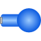

PointMassBody used at all places of the comparison model with zero inertia tensor |

|
Information
This information is part of the Modelica Standard Library maintained by the Modelica Association.
Body used at all places of the comparison model with zero inertia tensor (and mass = 1 kg and a red color).
Parameters (22)
| animation |
Value: true Type: Boolean Description: = true, if animation shall be enabled (show cylinder and sphere) |
|---|---|
| r_CM |
Value: {0, 0, 0} Type: Position[3] (m) Description: Vector from frame_a to center of mass, resolved in frame_a |
| m |
Value: 1 Type: Mass (kg) Description: Mass of rigid body |
| I_11 |
Value: 0 Type: Inertia (kg·m²) Description: (1,1) element of inertia tensor |
| I_22 |
Value: 0 Type: Inertia (kg·m²) Description: (2,2) element of inertia tensor |
| I_33 |
Value: 0 Type: Inertia (kg·m²) Description: (3,3) element of inertia tensor |
| I_21 |
Value: 0 Type: Inertia (kg·m²) Description: (2,1) element of inertia tensor |
| I_31 |
Value: 0 Type: Inertia (kg·m²) Description: (3,1) element of inertia tensor |
| I_32 |
Value: 0 Type: Inertia (kg·m²) Description: (3,2) element of inertia tensor |
| angles_fixed |
Value: false Type: Boolean Description: = true, if angles_start are used as initial values, else as guess values |
| angles_start |
Value: {0, 0, 0} Type: Angle[3] (rad) Description: Initial values of angles to rotate frame_a around 'sequence_start' axes into frame_b |
| sequence_start |
Value: {1, 2, 3} Type: RotationSequence Description: Sequence of rotations to rotate frame_a into frame_b at initial time |
| w_0_fixed |
Value: false Type: Boolean Description: = true, if w_0_start are used as initial values, else as guess values |
| w_0_start |
Value: {0, 0, 0} Type: AngularVelocity[3] (rad/s) Description: Initial or guess values of angular velocity of frame_a resolved in world frame |
| z_0_fixed |
Value: false Type: Boolean Description: = true, if z_0_start are used as initial values, else as guess values |
| z_0_start |
Value: {0, 0, 0} Type: AngularAcceleration[3] (rad/s²) Description: Initial values of angular acceleration z_0 = der(w_0) |
| sphereDiameter |
Value: world.defaultBodyDiameter Type: Diameter (m) Description: Diameter of sphere |
| cylinderDiameter |
Value: sphereDiameter / Types.Defaults.BodyCylinderDiameterFraction Type: Diameter (m) Description: Diameter of cylinder |
| sequence_angleStates |
Value: {1, 2, 3} Type: RotationSequence Description: Sequence of rotations to rotate world frame into frame_a around the 3 angles used as potential states |
| I |
Value: [I_11, I_21, I_31; I_21, I_22, I_32; I_31, I_32, I_33] Type: Inertia[3,3] (kg·m²) Description: inertia tensor |
| R_start |
Value: Modelica.Mechanics.MultiBody.Frames.axesRotations(sequence_start, angles_start, zeros(3)) Type: Orientation Description: Orientation object from world frame to frame_a at initial time |
| z_a_start |
Value: Frames.resolve2(R_start, z_0_start) Type: AngularAcceleration[3] (rad/s²) Description: Initial values of angular acceleration z_a = der(w_a), i.e., time derivative of angular velocity resolved in frame_a |
Inputs (3)
| sphereColor |
Default Value: Modelica.Mechanics.MultiBody.Types.Defaults.BodyColor Type: Color Description: Color of sphere |
|---|---|
| cylinderColor |
Default Value: sphereColor Type: Color Description: Color of cylinder |
| specularCoefficient |
Default Value: world.defaultSpecularCoefficient Type: SpecularCoefficient Description: Reflection of ambient light (= 0: light is completely absorbed) |
Connectors (1)
| frame_a |
Type: Frame_a Description: Coordinate system fixed at body |
|---|
Components (4)
| R_start |
Type: Orientation Description: Orientation object from world frame to frame_a at initial time |
|
|---|---|---|
| world |
Type: World |
|
| cylinder |
Type: Shape |
|
| sphere |
Type: Shape |
Used in Components (1)
|
Modelica.Mechanics.MultiBody.Examples.Elementary.PointGravityWithPointMasses2
For comparison purposes, an equivalent model with Bodies instead of PointMasses |